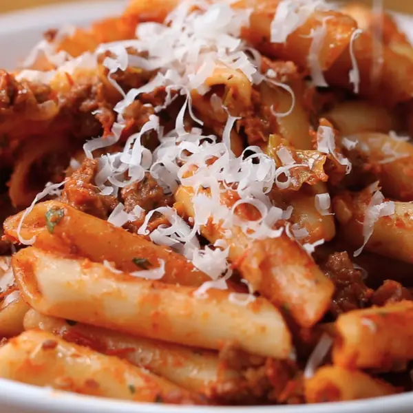

Bolognese Pasta

Description
This is a recipe for the best homemade Bolognese Pasta you could ever dream of
Ingredients
- 1 tablespoon of olive oil
- 1 small onion, finely diced
- 2 carrots, finely diced
- 2 stalks of celery, finely diced/li>
- 3 cloves of garlic, minced
- 2 italian sausages, casings removed, 1 sweet, 1 hot
- 1 pound of ground sirloin
- salt, to taste
- pepper, to taste
- 2 tablespoons of tomato paste
- 1 tablespoon of italian seasoning
- half a cup of red wine
- 28 oz of crushed tomato
- 16 oz of beef broth
- 2 bay leaves
- 1 cup of parmesan cheese
- half a cup of heavy cream
- 1 pound of penne pasta, cooked to box instructions
Steps
- In a large pot, set on medium heat, add the olive oil and sauté the onions, celery, carrots, and garlic
until they are soft, about 10-15 minutes.
- Add garlic and cook for an additional 2-3 minutes.
- Add the ground beef and the sausages. Season with salt and pepper, and break up the meat with a spoon and
frying until no longer pink.
- Next, add the tomato paste, Italian seasoning, and red wine. Stir and reduce until the wine has almost
completely evaporated.
- Now add all the remaining ingredients, except the parmesan and cream. Stir to ensure everything is well
mixed.
- Simmer for 30 minutes to 3 hours. The longer the simmer, the deeper and more concentrated the flavor.
- Stir in the parmesan and cream to the sausage bolognese.
- Add the cooked pasta to the sauce.
- Serve with more parmesan, if desired.
- Enjoy!
Go Back